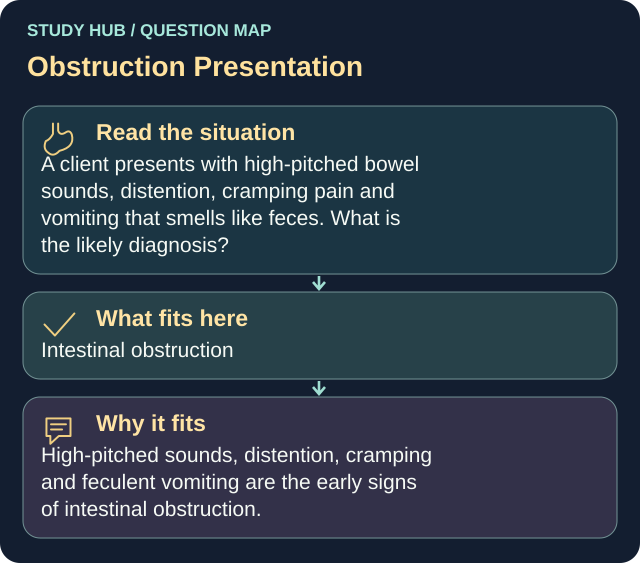

A client presents with high-pitched bowel sounds, distention, cramping pain and vomiting that smells like feces. What is the likely diagnosis?
Answer
Intestinal obstruction
Reasoning
High-pitched sounds, distention, cramping and feculent vomiting are the early signs of intestinal obstruction.
Why the other answers do not fit
- Appendicitis
- Diverticulitis
- Cholecystitis
Shared reasoning for choices without a separate note: High-pitched sounds, distention, cramping and feculent vomiting are the early signs of intestinal obstruction.
